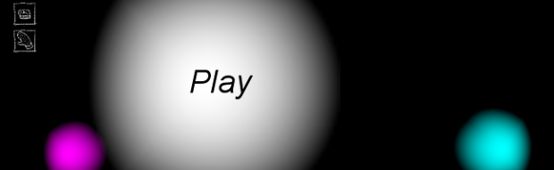

The Rite
Note: in-browser play requires Unity Web Player, which does not run in Chrome.
I developed The Rite by myself in less than 48 hours for the Global GameJam 2016. The theme was "ritual". A couple friends provided images to use in the game; credits are on the GameJam site, linked below.
Programs/Skills:
- Unity 5
- Maya 2015
- GIMP, Paint Tool SAI, Garageband
- C# coding
- Rapid prototyping
- Level design
Given the very limited time, I jumped in to making the game with little conceptual design beforehand. My concept was to play off the theme of "ritual" by creating an experience that at first seems ominous (collecting items such as matches and a knife in almost complete darkness) but turns out to be a common and perfectly harmless ritual: a birthday party.
Most development work and level design was done directly in-engine, but I modeled items such as the knife, candles, oven, etc. in Maya. I made most of the textures in SAI and GIMP, and composed the music and recorded sound effects with Garageband. I taught myslf enough C# over the course of the weekend to implement the simple interactions needed for the game.
I intend to iterate on this project over the summer by adding an exploratory element to the first part of the game in which the player picks up the various ritual objects. As it is, the player simply walks in a straight line to get each item, and it's not very engaging.